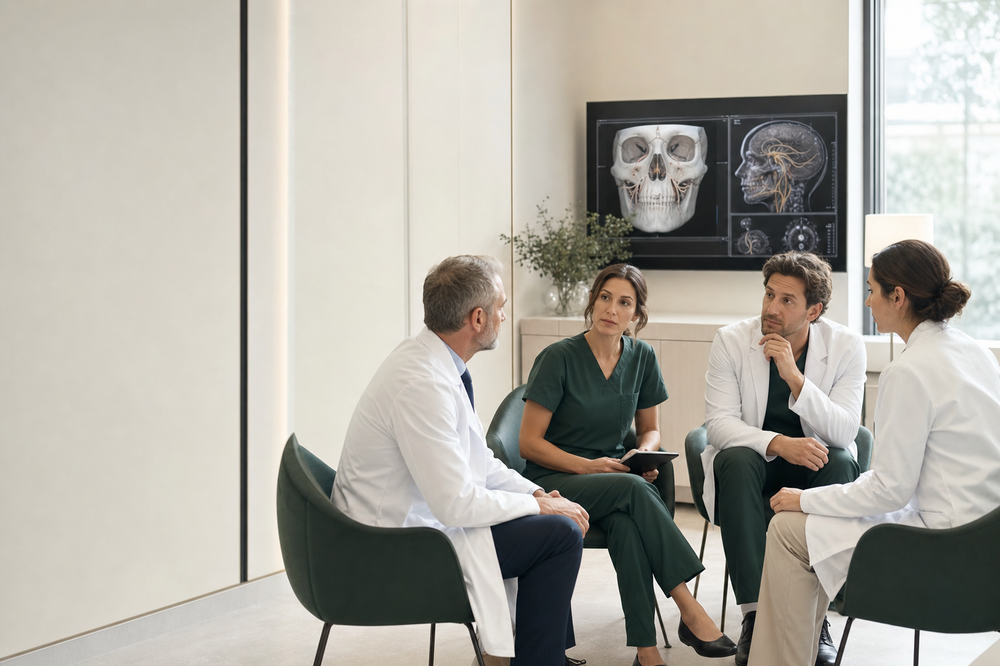

Образование
Конференции, школы, курсы и практические мастер-классы.
АСПЛН объединяет врачей, ученых и реабилитологов для развития диагностики, лечения и восстановления мимической функции.

Ассоциация формирует общий язык для специалистов разных дисциплин и помогает внедрять доказательные подходы в ежедневную работу.
Шесть направлений объединяют профессиональное развитие, научную работу и поддержку пациентов.
Конференции, школы, курсы и практические мастер-классы.
Исследовательские группы, публикации и поддержка проектов.
Рекомендации, протоколы и единые стандарты помощи.
Коллегиальный диалог и профессиональная поддержка.
Проверенная информация для пациентов и близких.
Совместные проекты с клиниками, вузами и НКО.
Доступ к профильной экспертизе и живому профессиональному обмену.
Обсуждение клинических ситуаций с коллегами смежных специальностей.
Архив лекций, алгоритмов и прикладных методик для практики.
Участие в образовательных, научных и партнерских проектах.
Кандидат медицинских наук, челюстно-лицевой и реконструктивный хирург, специалист по физиотерапии и реабилитации.
 Tilda · TM201
Tilda · TM201Секретарь ассоциации свяжется с вами и направит перечень документов. Получатель письма подтверждается заказчиком перед запуском.